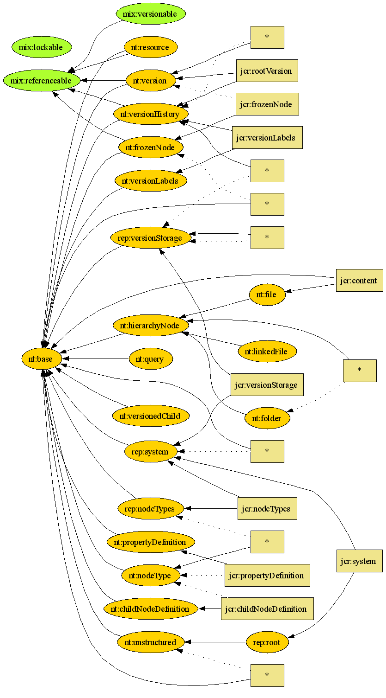

Node Type Visualization
Visualizing the Node Type Hierarchy is non-trivial, even in the case of a repository containing only the default Jackrabbit node types. Here, GraphViz can help:

Node Type Hierarchy for Jackrabbit (SVG version)
{kind=link}
In this diagram, the rounded boxes represent node types (green for mixins, gold for primrary types), with the arrows indicating the node inheritance. The square boxes represent child node and property definitions.
To generate these diagrams, you will need:
- A system view export of "/jcr:system/jcr:nodeTypes".
- An XSLT processor and the XSLT code below.
- The GraphViz tool
<!-- * Licensed to the Apache Software Foundation (ASF) under one or more * contributor license agreements. See the NOTICE file distributed with * this work for additional information regarding copyright ownership. * The ASF licenses this file to You under the Apache License, Version 2.0 * (the "License"); you may not use this file except in compliance with * the License. You may obtain a copy of the License at * * http://www.apache.org/licenses/LICENSE-2.0 * * Unless required by applicable law or agreed to in writing, software * distributed under the License is distributed on an "AS IS" BASIS, * WITHOUT WARRANTIES OR CONDITIONS OF ANY KIND, either express or implied. * See the License for the specific language governing permissions and * limitations under the License. --> <!-- A tool for converting the system view of /jcr:system/jcr:nodeTypes to GraphViz input (see <http://www.graphviz.org/>). Usage: 1: Export System View of /jcr:system/jcr:nodeTypes 2: Run XSLT transformation, producing a .dot file, such as with $ saxon nt-sample.xml jcr-nodetypes-to-dot.xslt > nt-sample.dot 3: Run Graphviz, for instance $ dot nt-sample.dot -Tsvg -o nt-sample.svg ...producing nt-sample.svg as output. --> <xsl:transform xmlns:xsl="http://www.w3.org/1999/XSL/Transform" version="1.0" xmlns:ed="http://greenbytes.de/2002/rfcedit" xmlns:exslt="http://exslt.org/common" xmlns:nt="http://www.jcp.org/jcr/nt/1.0" xmlns:sv="http://www.jcp.org/jcr/sv/1.0" xmlns:jcr="http://www.jcp.org/jcr/1.0" > <xsl:output method="text" encoding="UTF-8"/> <xsl:template match="/"> <xsl:text>digraph { </xsl:text> <xsl:text> rankdir=LR; </xsl:text> <xsl:apply-templates select="//sv:node[sv:property[@sv:name='jcr:primaryType']/sv:value='nt:nodeType']"/> <xsl:text>} </xsl:text> </xsl:template> <xsl:template match="sv:node[sv:property[@sv:name='jcr:primaryType']/sv:value='nt:nodeType']"> <xsl:text> "</xsl:text> <xsl:value-of select="@sv:name"/> <xsl:text>" </xsl:text> <xsl:choose> <xsl:when test="sv:property[@sv:name='jcr:isMixin']/sv:value='true'"> <xsl:text>[style = "filled, rounded", fillcolor = greenyellow];</xsl:text> </xsl:when> <xsl:otherwise> <xsl:text>[style = "filled, rounded", fillcolor = gold];</xsl:text> </xsl:otherwise> </xsl:choose> <xsl:text> </xsl:text> <xsl:for-each select="sv:property[@sv:name='jcr:supertypes']/sv:value"> <xsl:text> "</xsl:text> <xsl:value-of select="."/> <xsl:text>" -> "</xsl:text> <xsl:value-of select="../../@sv:name"/> <xsl:text>" [dir = back, tooltip = "supertype"]; </xsl:text> </xsl:for-each> <xsl:for-each select="sv:node[@sv:name='jcr:childNodeDefinition']"> <xsl:variable name="name"> <xsl:choose> <xsl:when test="sv:property[@sv:name='jcr:name']"> <xsl:value-of select="sv:property[@sv:name='jcr:name']/sv:value"/> </xsl:when> <xsl:otherwise>*</xsl:otherwise> </xsl:choose> </xsl:variable> <xsl:variable name="id" select="generate-id()"/> <xsl:value-of select="concat(' "',$id,'" [shape = box, style = filled, fillcolor = khaki, label="',$name,'"] ')"/> <xsl:text> "</xsl:text> <xsl:value-of select="../@sv:name"/> <xsl:text>" -> "</xsl:text> <xsl:value-of select="$id"/> <xsl:choose> <xsl:when test="sv:property[@sv:name='jcr:mandatory']/sv:value='true'"> <xsl:text>" [tooltip = "is mandatory child node of", dir = back]; </xsl:text> </xsl:when> <xsl:otherwise> <xsl:text>" [style = dotted, tooltip = "is child node of", dir = back]; </xsl:text> </xsl:otherwise> </xsl:choose> <xsl:text> "</xsl:text> <xsl:value-of select="sv:property[@sv:name='jcr:requiredPrimaryTypes']/sv:value"/> <xsl:text>" -> "</xsl:text> <xsl:value-of select="$id"/> <xsl:text>" [dir = back, tooltip = "has primary type"]; </xsl:text> </xsl:for-each> </xsl:template> </xsl:transform>